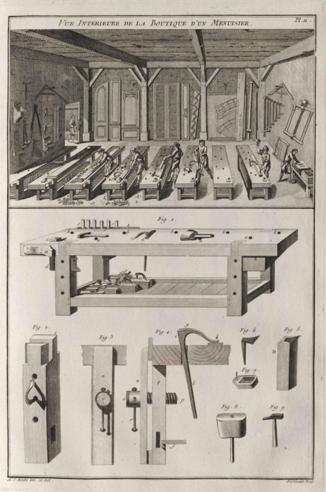

The Workshop
For more than a decade before setting up my first dedicated woodworking shop, I had been reading articles in woodworking magazines that provided suggestions for the essential tools needed and ways to arrange the workspace. There was some consistency in what I read, but like everything else, everyone has their own opinion. What works for them may not work for you. As I stated in the introduction, woodworking is a life-long journey, and as your work progresses and what you need to do it continually changes. Developing new woodworking skills and the types of projects you choose to build dictates the best layout for your shop and the tools you require to accomplish the work.
Use what follows as a guide, as many factors will influence the tools you purchase and the organization of your shop. One of the first considerations is the space size you have to set up shop. My current workshop is 11'6" x 21'6". With the table saw set up midway along the longer wall, there is just enough room to rip a full sheet of 4' x 8' plywood lengthwise. If the room were any shorter or narrower, I I could not cut sheet goods. If your room is smaller than mine and you intend to do work that requires cutting sheet goods or ripping long pieces of lumber (my lumber supplier sells primarily 14' boards) you need to consider having an alternative place to do that type of work, like a garage or outside space using a portable table saw or skill saw. Unless you intend to do small projects only and not use sheet goods, I'd suggest the minimum space needed to provide a functional woodworking shop is 12' x 22'. However, the larger, the better. A smaller shop doesn't leave much room for moving boards around or assembling large projects, but it's just enough to get by. I hope that my next house has a larger workspace
You can certainly get away with a smaller workspace if you intend to build only smaller projects like boxes or small cabinets, but another thing to consider is wood storage. If you buy your wood for projects as you go or only keep a limited supply on hand, you may be able to get by, but wood does tend to accumulate. As mentioned, where I purchase lumber sells only 14' lengths or shorts, and the supply varies from visit to visit, so I buy a board just because it may not be on hand when I need it later. Also, the cutoffs and scrap pieces accumulate and may prove useful for other projects.
I find it very convenient to have the wood in the workshop. Wood must be stored properly to avoid severe warping, twisting or cupping. Even kiln-dried wood, if stored improperly, may warp and twist to where it is no longer usable, causing excess waste. As wood is expensive, this is something to avoid. Proper storage is a factor in determining how much space you'll need, especially with sheet goods that take up a lot of space and require additional room to move around in the shop.
Consider storing wood in the shop to acclimate at the same relative humidity as the build time. Otherwise, you may end up with unexpected results or unusable lumber. Before using newly purchased wood, I keep it in the shop for a few weeks to avoid issues. Straight out of the kiln wood has about a 6% moisture content and then depending on how long it is stored, where it is stored (inside or outside), the climate where you live, the time of year, the moisture content will be somewhat higher. A wood supply in the shop ensures stability during the construction process.
If workshop wood storage is not an option, you'll want it close. My current workshop is in the basement, so bringing pieces in from the garage or outside is a pain. Purchased lumber goes straight into the shop, and sheet goods in a separate room. At times, especially at the start of a new project, the wood can pile up and get in the way, but it's generally just temporary, and I've learned to adapt while I contemplate the day I'm working in a bigger workshop.
The Workbench
In my opinion, the workbench is the most critical component of the workshop. A workbench should provide a stable workspace that efficiently holds a wide variety of workpieces. It sounds like a simple task, but in reality, it's far more of a challenge than you would think. My first workbench was purchased in 2012 on sale at Canadian Tire for \$100. For the price, it seemed like a good buy as I couldn't build a workbench for that price and I thought it would fit my needs until I found or made something better. Also, to this point, I hadn't done enough woodworking to know what I'd need or how I'd be using the workbench. I'm not going to go into any great detail on workbench selection, for that topic I recommend the book Workbenches by Christopher Schwarz.
Unfortunately, the Canadian Tire workbench was too small and light to be of much use. While hand planing boards, the entire workbench would move across the floor or kick up once the plane took purchase into the wood. It was of some use for specific light-duty tasks, but mostly it became a place to put my tools as I worked. Instead, I used the table saw outfeed table I built for most of my woodworking.
In late 2017 after reading Workbenches, I decided to build my variation of the Roubo Workbench to fit my workshop and as a test run before building the full workbench in the future.
I thoroughly enjoyed building this workbench. Many workbench designs suggest using standard stud grade lumber to save money, but I chose molding grade Pine and Ash for the top edges and the 9" Eclipse vise.
I decided not to install a tail vise thinking that I'd retrofit one if I needed to and bought a Veritas Wonder Dog to determine if it was a sufficient alternative. However, to date, I haven't made much use of the Wonder Dog or found much need for a tail vise.
I added a sliding deadman for working with long boards and purchased holdfasts for clamping work to the bench. Both devices have been used for woodworking for hundreds of years, and they are the most efficient, simplest, and cheapest methods of holding boards that I have found to date. In the picture of the workbench, you'll see a Veritas Planing Stop on the benchtop in front of the vise, which is a simple and effective way to hold boards while dimensioning with a hand plane.
Unlike the Canadian Tire workbench, this workbench is in constant use and I continue to adapt it as my woodworking skills improve. There are some pretty decent store-bought workbench options, but they are costly and besides the potential savings, the experience of building your workbench is worth the effort. I'll base my next workbench on the Le Roubo workbench described in the book Workbenches by Christopher Schwarz outfitted with a Benchcrafted leg vise. To purchase the Benchcrafted Benchmaker's Package in 2025 would cost $1550 USD. Hopefully, my next workbench, buying only the leg vise, will make it into this journal a few years from now. Until then, I have the plate depicting Andre Roubo's workbench from his 18th-century woodworking book L'art du Menuisier hanging on the wall of my office as inspiration.
